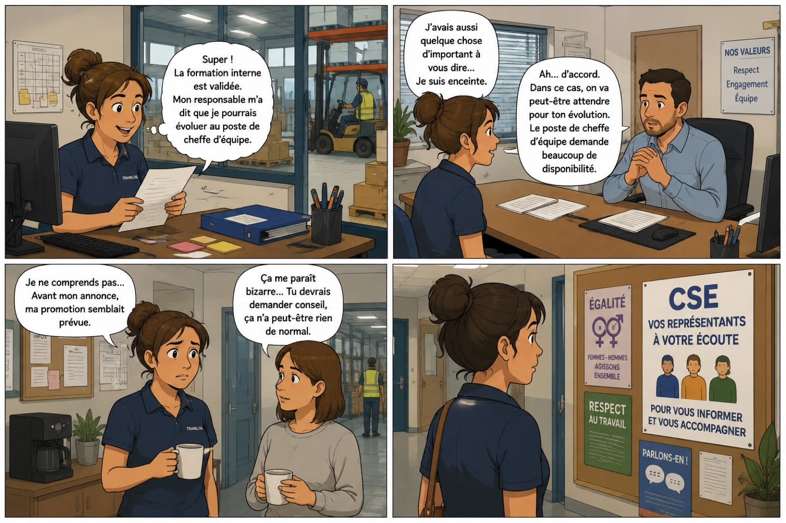
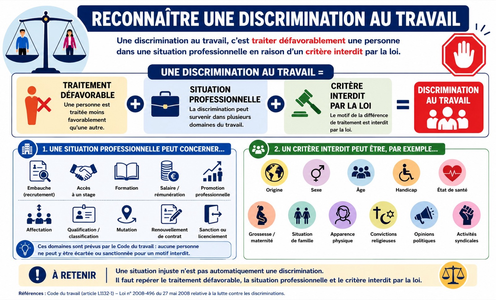
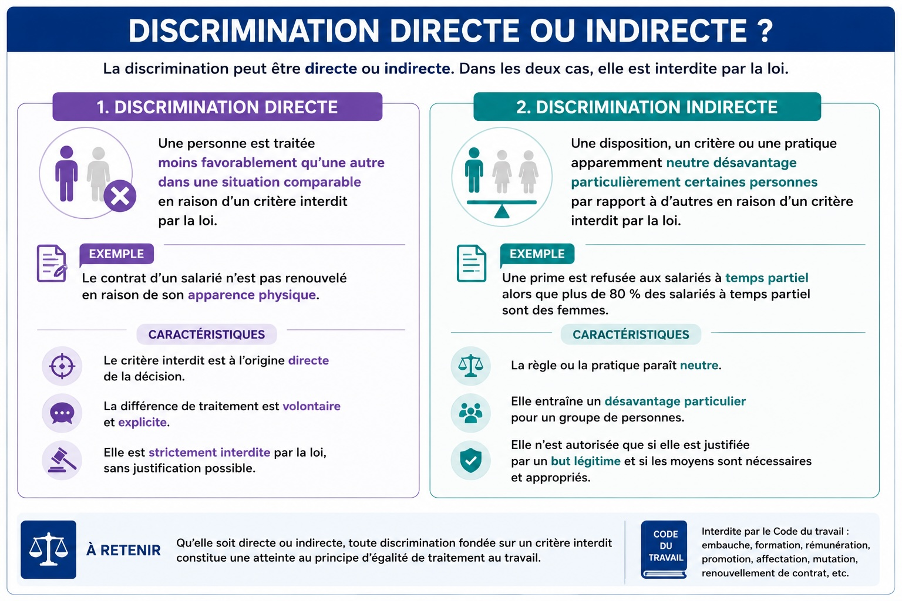
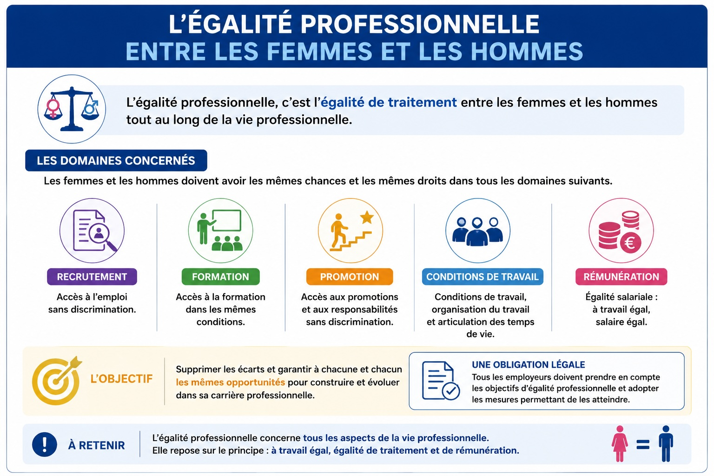
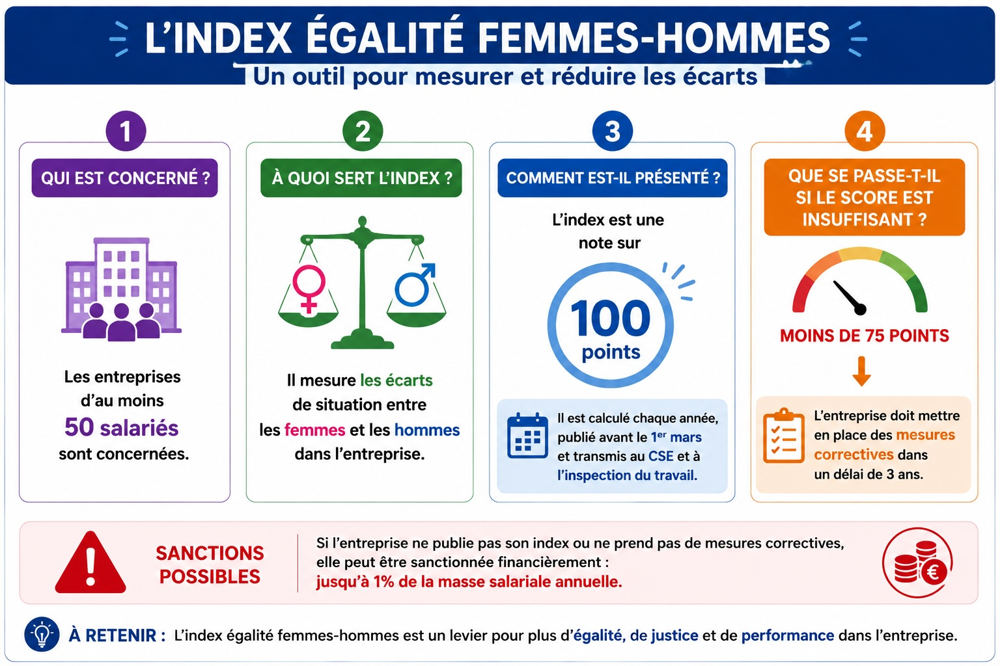
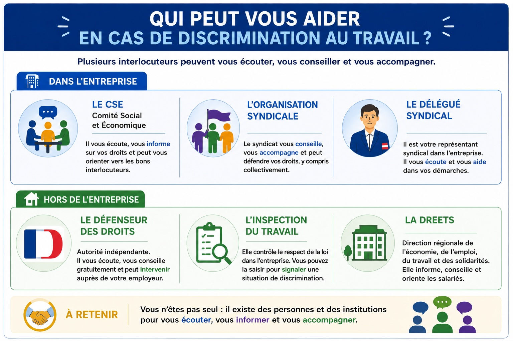
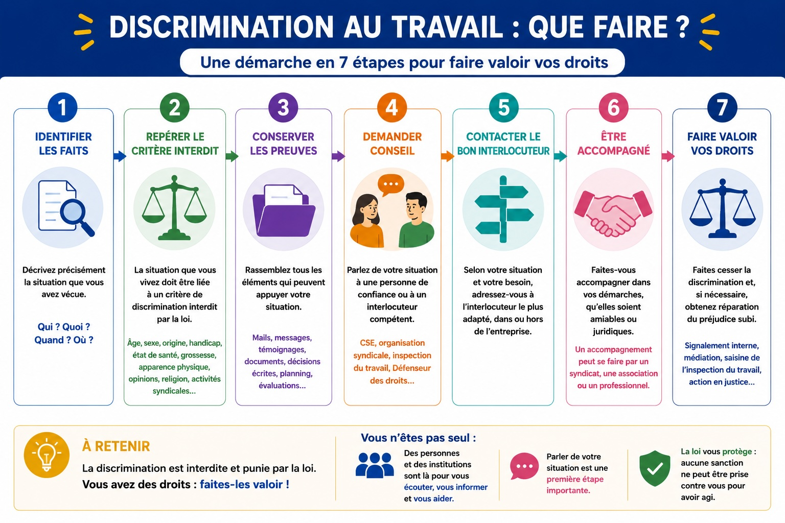

🎯 Objectif général de ce module
Être capable d'identifier les situations de discrimination et les obligations liées à l'égalité de traitement au travail.
C1C2C3C4C5
Séance 1
Module C.12 · Égalité de traitement
Séance 1
Repérer une discrimination au travail
🎯 Objectif de la séance
Être capable de repérer une discrimination au travail.
C1C2C3
Commencer
📋 Situation — Laure, en attente d'une promotion

🔍 Analyser la situation
1
Compléter le tableau QQOQCP afin d'analyser la situation de Laure.
C2
Qui ?
Quoi ?
Où ?
Quand ?
Comment ?
Pourquoi ?
💡 Indice
Le QQOQCP n'est pas un simple questionnaire. Le « Pourquoi ? » est l'étape la plus formatrice : c'est lui qui transforme la description en problème à résoudre. Pensez à ce que la loi interdit.
1
Compléter le QQOQCP de la situation de Laure.
✔ Corrigé
Qui ? Laure (salariée), son responsable hiérarchique, ses collègues, les représentants du CSE. Quoi ? Le report ou le retrait possible d'une promotion à la suite de l'annonce d'une grossesse. Où ? Dans l'entreprise (bureau du responsable, espace de pause, panneau d'affichage). Quand ? Après la validation de la formation interne, juste après l'annonce de la grossesse. Comment ? Le responsable justifie sa décision par le besoin de disponibilité du poste. Pourquoi cela pose problème ? La grossesse est un critère interdit par la loi : une décision défavorable fondée sur ce motif peut constituer une discrimination.
📌 Explication pédagogique
Le QQOQCP est un outil d'analyse : il oblige à organiser les faits avant de tirer une conclusion. Sans cet outil, on risquerait de qualifier trop vite la situation. C'est exactement la démarche attendue par un référent CSE ou un inspecteur du travail.
📚 Mobiliser les connaissances utiles
📄 DOC. 1 — Reconnaître une discrimination au travail

Une discrimination au travail consiste à traiter défavorablement une personne dans une situation professionnelle (embauche, formation, salaire, promotion, sanction, licenciement…) en raison d'un critère interdit par la loi (origine, sexe, âge, handicap, état de santé, grossesse, religion, opinions, activités syndicales, etc.).
2
À partir du DOC. 1, relever les trois éléments dont la combinaison définit une discrimination au travail.
C1
💡 Indice
L'image présente une équation visuelle avec un signe « + » entre chaque élément et un signe « = » menant à la conclusion.
2
Relever les trois éléments d'une discrimination.
✔ Corrigé
— Un traitement défavorable.
— Dans une situation professionnelle.
— En raison d'un critère interdit par la loi.
📌 Explication pédagogique
Une situation injuste n'est pas automatiquement une discrimination au sens du droit. Pour parler de discrimination, il faut les trois éléments réunis. C'est la grille utilisée par le Défenseur des droits et par les juges.
3
À partir du DOC. 1, définir, avec vos propres mots, ce qu'est une discrimination au travail.
C3
💡 Indice
Reprenez les trois éléments relevés en Q2 et reliez-les dans une phrase complète.
3
Définir une discrimination au travail.
✔ Corrigé
Une discrimination au travail consiste à traiter défavorablement une personne dans une situation professionnelle (embauche, rémunération, promotion, formation, sanction…) en raison d'un critère interdit par la loi (origine, sexe, âge, handicap, état de santé, grossesse, religion, opinions, activités syndicales, etc.).
📌 Explication pédagogique
Définir avec ses propres mots prouve que la notion est comprise et qu'elle pourra être mobilisée dans une situation nouvelle. C'est l'attendu central de la compétence C3.
📄 DOC. 2 — Discrimination directe ou indirecte ?

Discrimination directe : une personne est traitée moins favorablement qu'une autre dans une situation comparable, en raison d'un critère interdit par la loi. Le critère est directement à l'origine de la décision ; la différence de traitement est explicite.
Discrimination indirecte : une règle, une disposition ou une pratique apparemment neutre désavantage particulièrement certaines personnes en raison d'un critère interdit. La règle paraît neutre, mais elle entraîne en pratique un désavantage pour un groupe.
4
À partir du DOC. 2, relever deux caractéristiques de la discrimination directe et deux caractéristiques de la discrimination indirecte.
C1
Discrimination directe :
Discrimination indirecte :
💡 Indice
Cherchez ce qui rend la discrimination visible dans un cas, et cachée derrière une règle neutre dans l'autre.
4
Caractéristiques directe / indirecte.
✔ Corrigé
Directe :
— Le critère interdit est directement à l'origine de la décision.
— La différence de traitement est explicite, visible.
Indirecte :
— La règle, la disposition ou la pratique paraît neutre.
— Elle entraîne en pratique un désavantage particulier pour un groupe de personnes en raison d'un critère interdit.
📌 Explication pédagogique
La loi interdit les deux formes. Beaucoup ignorent l'existence de la discrimination indirecte : par exemple, refuser une prime aux temps partiels peut désavantager surtout les femmes et constituer une discrimination indirecte fondée sur le sexe.
5
En vous appuyant sur le DOC. 2 et la situation de Laure, identifier si la décision du responsable relève d'une discrimination directe ou indirecte, puis justifier votre réponse.
C2
💡 Indice
Demandez-vous : la grossesse est-elle directement évoquée par le responsable ? La décision est-elle prise en lien explicite avec cet événement ?
5
Analyser la situation de Laure.
✔ Corrigé
La situation de Laure relève d'une discrimination directe. En effet, la décision du responsable de reporter la promotion est intervenue immédiatement après l'annonce de la grossesse : le critère interdit par la loi (la grossesse) est directement à l'origine de la décision défavorable, et la différence de traitement (promotion annoncée puis remise en question) est explicite.
📌 Explication pédagogique
L'attendu est double : appliquer la notion apprise à un cas concret (C2) et justifier sa réponse par des éléments précis. Une réponse non justifiée reste insuffisante en Terminale Bac Pro : c'est la justification qui fait la différence devant un juge ou le Défenseur des droits.
🗝️ Notions essentielles
Discrimination au travail
Traitement défavorable d'une personne dans une situation professionnelle en raison d'un critère interdit par la loi.
Critère interdit
Caractéristique d'une personne que la loi interdit d'utiliser pour prendre une décision défavorable (environ 25 critères : origine, sexe, âge, handicap, grossesse, religion, opinions, etc.).
Discrimination directe
Le critère interdit est explicitement à l'origine de la décision défavorable. La différence de traitement est visible.
Discrimination indirecte
Une règle apparemment neutre entraîne en réalité un désavantage particulier pour un groupe en raison d'un critère interdit.
QQOQCP
Outil d'analyse : Qui, Quoi, Où, Quand, Comment, Pourquoi. Permet d'organiser les faits d'une situation avant de la qualifier.
📝 Auto-évaluation — Séance 1
1
Une discrimination au travail se définit par la combinaison de trois éléments. Lesquels ?
QCM
📌 Explication pédagogique
Une situation injuste n'est pas automatiquement une discrimination. Pour qu'il y en ait une au sens du droit, il faut les trois éléments réunis : un traitement défavorable (effet), dans une situation professionnelle (cadre) et fondé sur un critère interdit (motif). C'est la grille utilisée par le Défenseur des droits.
2
Vrai ou Faux ? Une discrimination indirecte repose sur une règle apparemment neutre.
Vrai / Faux
📌 Explication pédagogique
C'est précisément ce qui distingue la discrimination indirecte de la directe : la règle ne mentionne pas le critère interdit, elle paraît neutre, mais en pratique elle désavantage un groupe (par exemple une prime refusée aux temps partiels — qui touche surtout les femmes).
3
Intrus — Quel élément suivant n'est PAS un critère interdit de discrimination par la loi ?
Intrus
📌 Explication pédagogique
La performance professionnelle est un critère légitime : un employeur a le droit d'évaluer un salarié sur la qualité de son travail. En revanche, grossesse, handicap et religion font partie des critères interdits : une décision défavorable fondée sur ces motifs constitue une discrimination.
4
Compléter — Dans la situation de Laure, le critère interdit par la loi est : …
À compléter
📌 Explication pédagogique
La grossesse est un critère explicitement protégé par le Code du travail. Toute décision défavorable (refus de promotion, licenciement, non-renouvellement…) fondée sur ce motif est interdite et peut être contestée.
5
Compléter — La situation de Laure relève d'une discrimination ……………… (directe ou indirecte) ?
À compléter
📌 Explication pédagogique
La discrimination est directe car le critère interdit (la grossesse) est explicitement à l'origine de la décision (report de la promotion). La différence de traitement est visible et immédiate, elle n'est pas dissimulée derrière une règle d'apparence neutre.
6
Rédigé — Donner un exemple personnel ou observé de situation pouvant constituer une discrimination indirecte au travail.
Rédigé
✔ Exemple
Refuser systématiquement les promotions aux salariés à temps partiel : cette règle paraît neutre, mais comme la majorité des salariés à temps partiel sont des femmes, elle constitue une discrimination indirecte fondée sur le sexe.
🎯 Objectif de la séance
Être capable d'identifier les obligations de l'employeur en matière d'égalité professionnelle.
C1C2C3
Commencer
📚 Mobiliser les connaissances utiles
📄 DOC. 3 — L'égalité professionnelle entre les femmes et les hommes

L'égalité professionnelle correspond à l'égalité de traitement entre les femmes et les hommes tout au long de la vie professionnelle. Elle doit être garantie dans plusieurs domaines clés : le recrutement, la formation, la promotion, les conditions de travail et la rémunération (« à travail égal, salaire égal »).
Tous les employeurs doivent prendre en compte les objectifs d'égalité professionnelle et adopter les mesures permettant de les atteindre, afin de supprimer les écarts et de garantir à chacune et chacun les mêmes opportunités de carrière.
6
À partir du DOC. 3, relever les cinq domaines dans lesquels l'égalité de traitement entre les femmes et les hommes doit être garantie au travail.
C1
💡 Indice
Pensez aux grandes étapes de la vie professionnelle, de l'entrée dans l'entreprise jusqu'au salaire.
6
Les cinq domaines de l'égalité professionnelle.
✔ Corrigé
— Recrutement : accès à l'emploi sans discrimination.
— Formation : mêmes conditions d'accès.
— Promotion : accès aux responsabilités.
— Conditions de travail : organisation, articulation des temps de vie.
— Rémunération : « à travail égal, salaire égal ».
📌 Explication pédagogique
L'égalité professionnelle n'est pas une règle unique : c'est un principe qui traverse toute la vie professionnelle. Connaître les domaines permet d'identifier précisément où une inégalité se produit.
7
À partir du DOC. 3, expliquer pourquoi l'égalité professionnelle constitue une obligation pour l'employeur.
C3
💡 Indice
Cherchez la phrase qui mentionne ce que tous les employeurs doivent faire, puis l'objectif visé par cette obligation.
7
L'obligation d'égalité professionnelle.
✔ Corrigé
L'égalité professionnelle est imposée par la loi à tous les employeurs. Ils doivent prendre en compte les objectifs d'égalité et adopter des mesures concrètes pour les atteindre. L'objectif est de supprimer les écarts entre les femmes et les hommes et de garantir à chacune et chacun les mêmes opportunités pour construire et faire évoluer sa carrière professionnelle.
📌 Explication pédagogique
Expliquer une obligation, c'est en présenter le fondement (la loi) et la finalité (supprimer les inégalités). C'est le niveau d'exigence attendu en Terminale.
📄 DOC. 4 — L'Index égalité femmes-hommes

L'Index égalité femmes-hommes est un outil réglementaire qui mesure les écarts de situation entre les femmes et les hommes dans l'entreprise. Il est obligatoire pour toutes les entreprises d'au moins 50 salariés.
Présenté sous forme d'une note sur 100 points, il est calculé chaque année et publié avant le 1er mars. Il est transmis au CSE ainsi qu'à l'inspection du travail.
Un score inférieur à 75 points entraîne l'obligation de mettre en place des mesures correctives dans un délai de 3 ans. À défaut, l'entreprise peut être sanctionnée financièrement jusqu'à 1 % de la masse salariale annuelle.
8
À partir du DOC. 4, relever les quatre informations clés de l'Index égalité.
C1
Qui est concerné ?
Note maximale ?
Seuil critique ?
Sanction possible ?
💡 Indice
Quatre chiffres sont à retrouver dans le document : l'effectif d'entreprise, le score, le seuil, le pourcentage de la sanction.
8
Les chiffres clés de l'Index égalité.
✔ Corrigé
Qui : entreprises d'au moins 50 salariés. Note maximale :100 points. Seuil critique : moins de 75 points = mesures correctives obligatoires sous 3 ans. Sanction : jusqu'à 1 % de la masse salariale annuelle.
📌 Explication pédagogique
Connaître ces chiffres permet de comprendre que l'égalité n'est pas une déclaration : c'est une obligation mesurable, contrôlée et sanctionnée.
9
En vous appuyant sur le DOC. 3 et la situation de Laure, identifier dans quel domaine de l'égalité professionnelle se situe le problème vécu par Laure.
C2
💡 Indice
Reprenez la liste des cinq domaines. Quel est celui dont parle le responsable de Laure dans la BD ?
9
Le domaine concerné par la situation de Laure.
✔ Corrigé
Le problème de Laure concerne principalement le domaine de la promotion (l'accès aux responsabilités, en l'occurrence le poste de cheffe d'équipe). Il touche également, indirectement, les conditions de travail, puisque le responsable invoque la « disponibilité » exigée par le poste — un argument qui peut désavantager structurellement les salariées enceintes.
📌 Explication pédagogique
Identifier le bon domaine est essentiel pour orienter une démarche : ce n'est pas la même chose de contester un refus d'embauche, une inégalité salariale ou une promotion refusée.
🗝️ Notions essentielles
Égalité professionnelle
Égalité de traitement entre femmes et hommes tout au long de la vie professionnelle, dans 5 domaines.
« À travail égal, salaire égal »
Principe fondamental du Code du travail garantissant l'égalité de rémunération pour un travail de valeur égale.
Index égalité F-H
Outil réglementaire mesurant chaque année les écarts F/H dans les entreprises d'au moins 50 salariés. Note sur 100.
Mesures correctives
Actions concrètes qu'une entreprise doit mettre en place pour corriger un écart constaté (score < 75/100).
Masse salariale
Somme des rémunérations versées par l'employeur sur une année. Sert de base au calcul de la sanction (jusqu'à 1 %).
📝 Auto-évaluation — Séance 2
1
L'Index égalité femmes-hommes concerne les entreprises d'au moins…
QCM
📌 Explication pédagogique
Le seuil de 50 salariés a été fixé par la loi de 2018 pour rendre l'Index obligatoire dans la majorité des entreprises de taille significative tout en évitant une charge trop lourde pour les très petites entreprises. C'est ce seuil qu'il faut retenir pour le bac.
2
Vrai ou Faux ? Le principe « à travail égal, salaire égal » fait partie des obligations d'égalité professionnelle.
Vrai / Faux
📌 Explication pédagogique
« À travail égal, salaire égal » est l'un des principes fondamentaux du Code du travail. Il fait partie intégrante de l'égalité professionnelle dans le domaine de la rémunération : deux salariés effectuant un travail de valeur égale doivent percevoir la même rémunération, indépendamment de leur sexe.
3
Intrus — Quel domaine suivant ne fait PAS partie des cinq domaines de l'égalité professionnelle ?
Intrus
📌 Explication pédagogique
Les cinq domaines de l'égalité professionnelle sont : recrutement, formation, promotion, conditions de travail, rémunération. La vie privée du salarié est protégée par d'autres règles (respect de la vie privée, secret médical…) mais ne fait pas partie de l'égalité professionnelle au sens strict.
4
Compléter — Si l'Index est inférieur à ……… points, l'entreprise doit mettre en place des mesures correctives.
À compléter
📌 Explication pédagogique
Le seuil de 75/100 est le seuil d'alerte. En dessous, l'entreprise est considérée comme insuffisamment engagée pour l'égalité et doit définir des mesures correctives sous 3 ans, sous peine de sanction financière pouvant atteindre 1 % de la masse salariale.
5
Compléter — La sanction maximale en cas de non-respect peut atteindre …… % de la masse salariale annuelle.
À compléter
📌 Explication pédagogique
La sanction de 1 % est calculée sur la masse salariale annuelle, ce qui peut représenter des sommes très importantes pour les grandes entreprises. C'est ce qui donne à l'Index sa force : une obligation mesurée, contrôlée et financièrement sanctionnée.
6
Rédigé — Dans le cas de Laure, expliquer en quoi l'employeur risque de ne pas respecter ses obligations en matière d'égalité professionnelle.
Rédigé
✔ Exemple
En remettant en question la promotion de Laure après l'annonce de sa grossesse, l'employeur risque de ne pas respecter le principe d'égalité dans le domaine de la promotion : il introduit une différence de traitement fondée sur un critère interdit (la grossesse), alors qu'il a l'obligation légale de garantir les mêmes opportunités d'évolution à tous les salariés.
Module C.12 · Égalité de traitement
Séance 3
Agir face à une discrimination au travail
🎯 Objectif de la séance
Être capable d'identifier les interlocuteurs à solliciter en cas de discrimination au travail.
C1C3C4C5
Commencer
📚 Mobiliser les connaissances utiles
📄 DOC. 5 — Qui peut vous aider en cas de discrimination au travail ?

En cas de discrimination au travail, plusieurs interlocuteurs peuvent écouter, conseiller et accompagner la personne concernée.
Dans l'entreprise : le CSE (Comité Social et Économique) écoute, informe sur les droits et oriente. L'organisation syndicale conseille, accompagne et défend les droits, y compris collectivement. Le délégué syndical représente les salariés et aide dans les démarches.
Hors de l'entreprise : le Défenseur des droits est une autorité indépendante qui écoute, conseille gratuitement et peut intervenir. L'inspection du travail contrôle le respect du droit du travail et peut être saisie. La DREETS (Direction Régionale de l'Économie, de l'Emploi, du Travail et des Solidarités) informe, conseille et oriente les salariés.
10
À partir du DOC. 5, classer les six interlocuteurs présentés en deux catégories : dans l'entreprise / hors de l'entreprise.
C1
Dans l'entreprise :
Hors de l'entreprise :
💡 Indice
Le document est divisé en deux grands encadrés (un bleu, un vert) qui correspondent exactement aux deux catégories.
10
Classement des interlocuteurs.
✔ Corrigé
Dans l'entreprise :
— Le CSE (Comité Social et Économique).
— L'organisation syndicale.
— Le délégué syndical.
Hors de l'entreprise :
— Le Défenseur des droits.
— L'inspection du travail.
— La DREETS.
📌 Explication pédagogique
Cette distinction est stratégique : un salarié choisira souvent d'abord un interlocuteur interne (plus rapide, confidentiel, sans rupture du dialogue) avant de saisir une autorité externe.
11
À partir du DOC. 5, expliquer en une phrase complète le rôle du Défenseur des droits.
C3
💡 Indice
Trois mots clés sont à retenir : indépendant, gratuit, peut intervenir.
11
Le rôle du Défenseur des droits.
✔ Corrigé
Le Défenseur des droits est une autorité indépendante qui écoute la personne, la conseille gratuitement et peut intervenir pour faire cesser une discrimination ou faire valoir ses droits.
📌 Explication pédagogique
Le saisir est gratuit et n'exige pas d'avocat. Cette accessibilité est essentielle pour que les droits ne soient pas réservés aux personnes les mieux informées.
📄 DOC. 6 — Discrimination au travail : que faire ?

Si vous pensez être victime de discrimination au travail, une démarche en 7 étapes permet de faire valoir vos droits :
1. Identifier les faits — décrire précisément la situation : qui, quoi, quand, où. 2. Repérer le critère interdit par la loi (âge, sexe, origine, grossesse, etc.). 3. Conserver les preuves : mails, messages, témoignages, documents, décisions écrites. 4. Demander conseil à une personne de confiance ou à un interlocuteur compétent. 5. Contacter le bon interlocuteur selon la situation. 6. Être accompagné dans les démarches amiables ou juridiques. 7. Faire valoir ses droits et, si nécessaire, obtenir réparation.
12
En vous appuyant sur le DOC. 6 et la situation de Laure, appliquer les trois premières étapes de la démarche à son cas.
C2
Étape 1 — Faits
Étape 2 — Critère
Étape 3 — Preuves
💡 Indice
Étape 1 : notez précisément ce qui s'est dit et quand. Étape 2 : nommez le critère interdit. Étape 3 : pensez à tous les éléments écrits ou enregistrés.
12
Trois premières étapes appliquées à Laure.
✔ Corrigé
Étape 1 — Faits : Laure a validé sa formation interne, une promotion lui a été annoncée, puis remise en question immédiatement après l'annonce de sa grossesse, avec pour motif évoqué le « besoin de disponibilité ». Étape 2 — Critère interdit : la grossesse, critère explicitement protégé par le Code du travail. Étape 3 — Preuves : attestation de validation de la formation, échanges écrits ou mails annonçant la promotion, traces de l'entretien (notes datées, témoignages de collègues), affichages internes (CSE).
📌 Explication pédagogique
Appliquer une démarche générique à un cas réel est l'attendu central de la compétence C2. La précision factuelle (dates, mots employés, documents) fait toute la différence devant un référent CSE ou le Défenseur des droits.
13
À partir de tout ce qui a été vu, proposer à Laure trois actions concrètes pour faire valoir ses droits.
C4
💡 Indice
Pensez à un interlocuteur interne, un interlocuteur externe, et une action de préparation (preuves, traces).
13
Proposer trois actions à Laure.
✔ Corrigé
— Saisir le CSE de son entreprise pour exposer la situation, obtenir des informations et bénéficier d'un accompagnement interne.
— Solliciter le Défenseur des droits pour obtenir un avis juridique gratuit et indépendant.
— Conserver toutes les preuves : échanges écrits, attestations, témoignages de collègues, dates de l'annonce de la grossesse et de la remise en cause de la promotion.
📌 Explication pédagogique
Une réponse de niveau Terminale doit nommer les acteurs, indiquer la nature de l'action, et hiérarchiser ce qui est faisable rapidement. « Faire quelque chose » ne suffit pas.
14
Parmi les interlocuteurs identifiés, justifier celui que Laure devrait contacter en premier.
C5
💡 Indice
Un bon argument repose sur des critères précis : rapidité, confidentialité, proximité, gratuité, capacité d'écoute, légitimité reconnue.
14
Justifier le choix de l'interlocuteur prioritaire.
✔ Corrigé
Laure devrait contacter le CSE en premier, car :
— il est interne à l'entreprise, ce qui permet une démarche rapide et accessible ;
— ses membres sont tenus à la confidentialité ;
— sa mission est précisément d'écouter, informer sur les droits et orienter ;
— il maintient le dialogue interne et permet, si nécessaire, d'élargir ensuite la démarche vers le Défenseur des droits ou l'inspection du travail.
📌 Explication pédagogique
La compétence C5 distingue une opinion d'un véritable argument : un argument s'appuie sur des critères vérifiables, pas sur une préférence personnelle.
🗝️ Notions essentielles
CSE
Comité Social et Économique : instance représentative interne à l'entreprise qui écoute, informe et oriente les salariés.
Défenseur des droits
Autorité indépendante, gratuite. Conseille et peut intervenir pour faire cesser une discrimination.
Inspection du travail
Service externe qui contrôle le respect du droit du travail dans l'entreprise et peut être saisi.
DREETS
Direction Régionale de l'Économie, de l'Emploi, du Travail et des Solidarités. Informe et oriente les salariés.
Démarche en 7 étapes
Faits → critère interdit → preuves → conseil → bon interlocuteur → accompagnement → faire valoir ses droits.
Preuves
Mails, messages, témoignages, documents datés. Élément déterminant pour faire reconnaître la discrimination.
📝 Auto-évaluation — Séance 3
1
Le CSE est un interlocuteur…
QCM
📌 Explication pédagogique
Le CSE (Comité Social et Économique) est une instance obligatoire dans toutes les entreprises de 11 salariés et plus. Ses membres sont élus par les salariés et siègent au sein de l'entreprise : c'est donc un interlocuteur interne, accessible facilement et tenu à la confidentialité.
2
Vrai ou Faux ? Le Défenseur des droits est une autorité indépendante et gratuite.
Vrai / Faux
📌 Explication pédagogique
Le Défenseur des droits est une autorité administrative indépendante inscrite dans la Constitution. Sa saisine est entièrement gratuite et ne nécessite aucun avocat : cette accessibilité garantit que les droits ne soient pas réservés aux personnes les mieux informées ou les plus fortunées.
3
Quelle est la première étape de la démarche en cas de discrimination ?
QCM
📌 Explication pédagogique
Une démarche en justice ne se déclenche pas sans préparation. La première étape consiste toujours à identifier les faits précisément (qui a fait quoi, quand, où, comment). Sans cette base solide, il est impossible de qualifier juridiquement la situation ni de constituer un dossier convaincant.
4
Compléter — Pour appuyer une démarche, il est essentiel de conserver les ……………… (mails, témoignages, documents datés).
À compléter
📌 Explication pédagogique
Les preuves sont déterminantes : devant un juge ou le Défenseur des droits, c'est la personne qui s'estime discriminée qui doit présenter les éléments laissant supposer une discrimination. Sans traces écrites, témoignages ou documents datés, la démarche reste très difficile à mener.
5
Compléter — Dans l'entreprise, l'instance représentative qui peut écouter et orienter un salarié en cas de discrimination s'appelle le ………… (sigle).
À compléter
📌 Explication pédagogique
Le CSE (Comité Social et Économique) a remplacé en 2018 les anciennes instances (délégués du personnel, comité d'entreprise, CHSCT). Il rassemble désormais leurs missions : représentation des salariés, dialogue social, santé et sécurité au travail, écoute en cas de discrimination ou harcèlement.
6
Rédigé — À la place de Laure, rédiger en 2 à 3 phrases un message court adressé au CSE pour solliciter un entretien.
Rédigé
✔ Exemple
« Madame, Monsieur, je souhaiterais vous rencontrer dans le cadre de vos missions d'écoute et d'accompagnement. Une promotion vers le poste de cheffe d'équipe m'avait été annoncée, puis remise en question après l'annonce de ma grossesse. Je sollicite votre conseil sur la marche à suivre. Cordialement, Laure. »
📋 Fiche synthétique — Module C.12
À conserver et à relire avant l'évaluation
Définitions clés
Discrimination au travail : traitement défavorable d'une personne dans une situation professionnelle en raison d'un critère interdit par la loi.
Discrimination directe : le critère interdit est explicitement à l'origine de la décision ; la différence de traitement est visible.
Discrimination indirecte : une règle apparemment neutre désavantage particulièrement un groupe en raison d'un critère interdit.
Égalité professionnelle : égalité de traitement entre femmes et hommes tout au long de la vie professionnelle.
Critères interdits (≈ 25 au total)
Origine, sexe, âge, handicap, état de santé
Grossesse, situation de famille, apparence physique
Religion ou convictions religieuses, opinions politiques
Activités syndicales, orientation sexuelle, lieu de résidence…
Les 5 domaines de l'égalité professionnelle
Recrutement — accès à l'emploi sans discrimination
Formation — mêmes conditions d'accès
Promotion — accès aux responsabilités
Conditions de travail — organisation, articulation des temps de vie
Rémunération — « à travail égal, salaire égal »
L'Index égalité femmes-hommes
Obligatoire pour les entreprises d'au moins 50 salariés · Note sur 100 points · Publié chaque année avant le 1er mars.
Score < 75/100 → mesures correctives obligatoires sous 3 ans.
Sanction possible : jusqu'à 1 % de la masse salariale annuelle.
La démarche en 7 étapes
1. Identifier les faits (qui, quoi, quand, où)
2. Repérer le critère interdit par la loi
3. Conserver les preuves (mails, témoignages, documents)
4. Demander conseil
5. Contacter le bon interlocuteur
6. Être accompagné
7. Faire valoir ses droits
Les interlocuteurs
Dans l'entreprise : CSE, organisation syndicale, délégué syndical
Hors de l'entreprise : Défenseur des droits, inspection du travail, DREETS